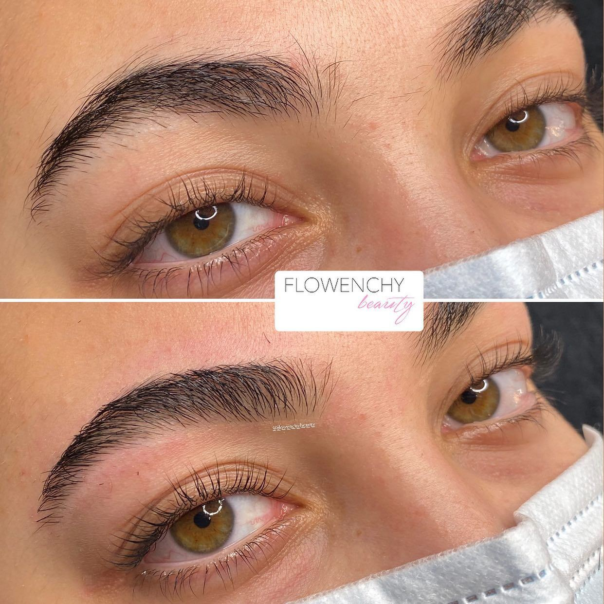
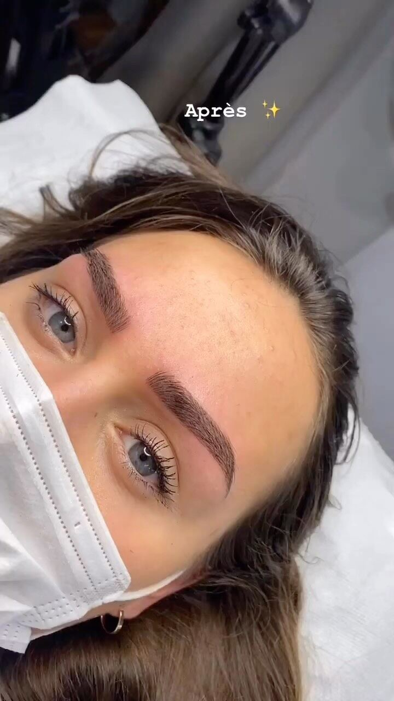
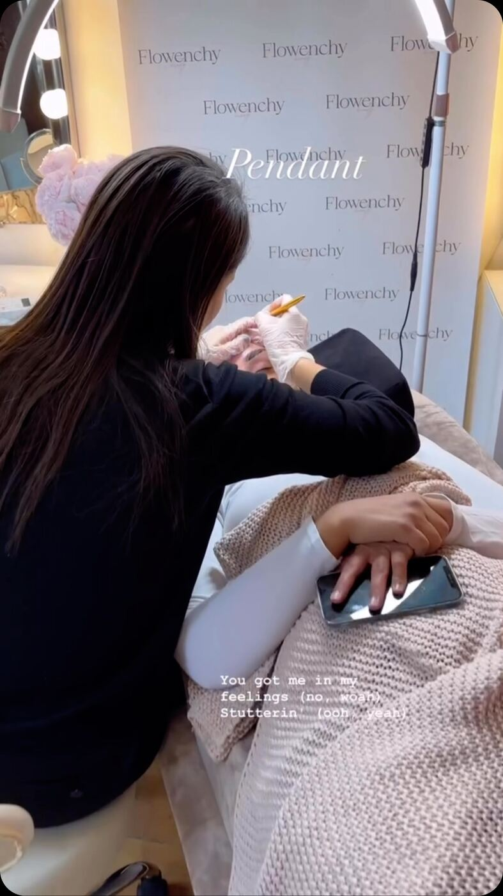

Accueil / Microblading
Sourcils · Longue tenueMicroblading sur-mesure
Une pigmentation fine et précise qui imite le poil. Pour combler des sourcils clairsemés, corriger une asymétrie ou ne plus jamais les dessiner le matin.

Des poils dessinés un à un.
Le microblading dépose le pigment en traits très fins, dans le sens naturel de la pousse. Le résultat est structuré mais reste crédible de près. Une retouche fixatrice 3 à 4 semaines plus tard fixe et prolonge le résultat, puis une retouche tous les 6 à 12 mois ravive la couleur.
Consultation
Forme, couleur du pigment et attentes : tout est décidé ensemble.
Tracé
Le dessin des sourcils est réalisé et validé avant de commencer.
Pigmentation
Les poils sont tracés un à un, avec un pigment adapté à votre carnation.
Retouche
3 à 4 semaines après, pour fixer et parfaire le résultat.
Le résultat, sans filtre
Des clientes du studio, photographiées juste après leur rendez-vous.




Les formules
Prix TTC. Réservation et paiement sur place, via Planity.
Microblading sur-mesure
Pigmentation fine qui imite le poil, pour des sourcils restructurés et naturels.
1re retouche fixatrice
3 à 4 semaines après la première séance, pour fixer et prolonger le résultat.
Retouche d'entretien (6 mois – 1 an)
Ravive la couleur et la netteté des sourcils.
Une cicatrisation soignée
- Pas d'alcool ni d'anticoagulant (aspirine) 24 h avant.
- Ne mouillez pas les sourcils pendant 7 jours.
- Appliquez le baume conseillé, en couche fine.
- Ne grattez pas les petites croûtes : elles tombent seules.
- Pas de soleil, sauna ni piscine pendant 2 semaines.
- La couleur paraît plus foncée au début : c'est normal.
Vous vous demandez…
Combien de temps dure un microblading ?
Le résultat s'estompe progressivement. Une retouche tous les 6 à 12 mois garde des sourcils nets, selon votre peau et votre exposition au soleil.
Le résultat est-il naturel ?
Oui, c'est tout l'intérêt de la technique poil à poil. La forme et la couleur sont choisies pour vous, jamais copiées d'une tendance.
La retouche est-elle obligatoire ?
Elle est fortement recommandée. Certaines zones retiennent moins le pigment pendant la cicatrisation, la retouche les complète.
Y a-t-il des contre-indications ?
Oui, par exemple grossesse, allaitement, certains traitements ou problèmes de peau sur la zone. Parlez-en avant de réserver : un avis est donné au cas par cas.